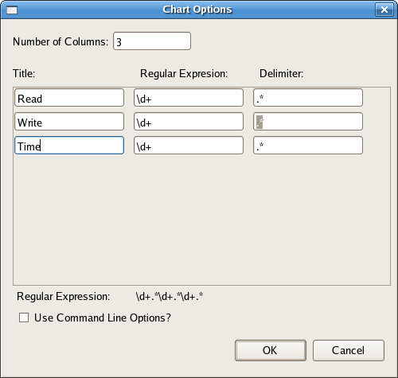
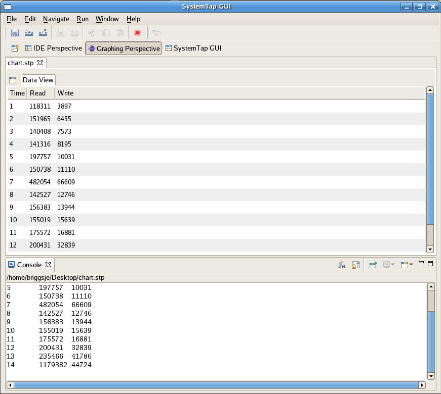
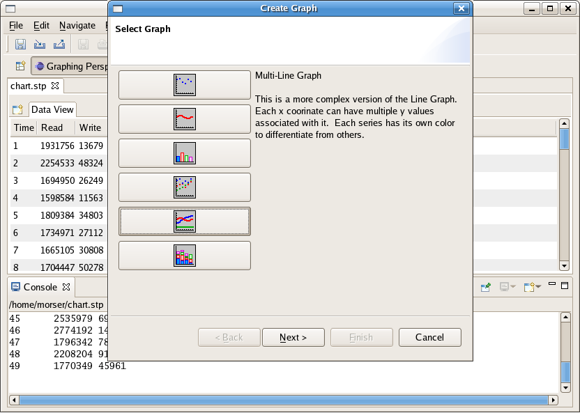
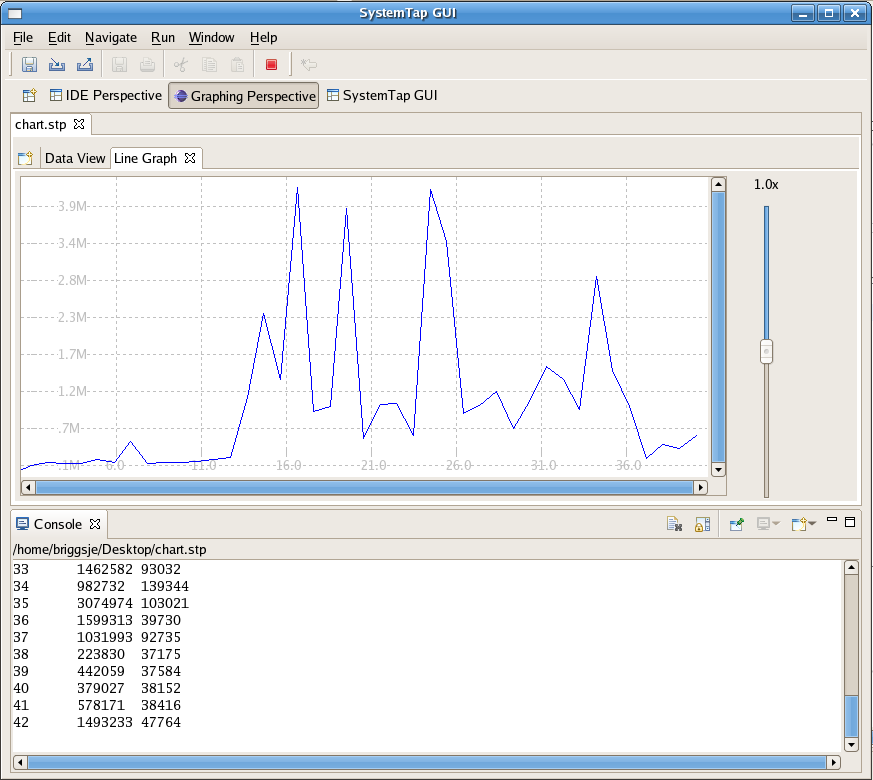
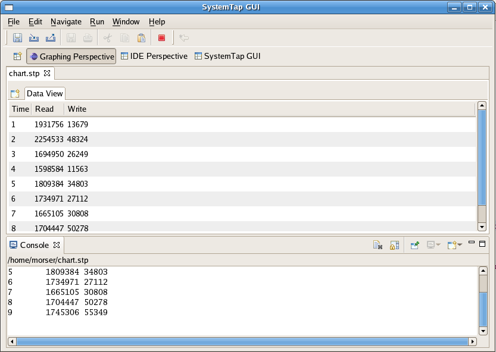
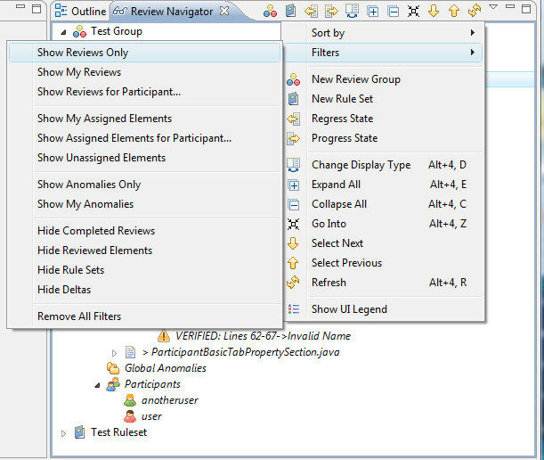
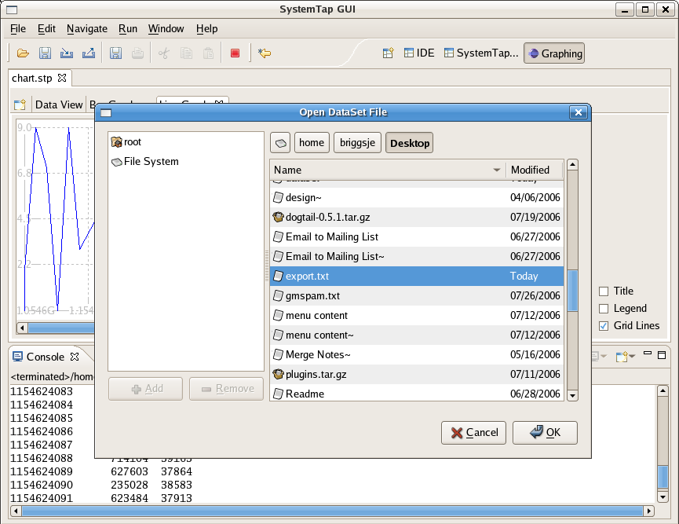
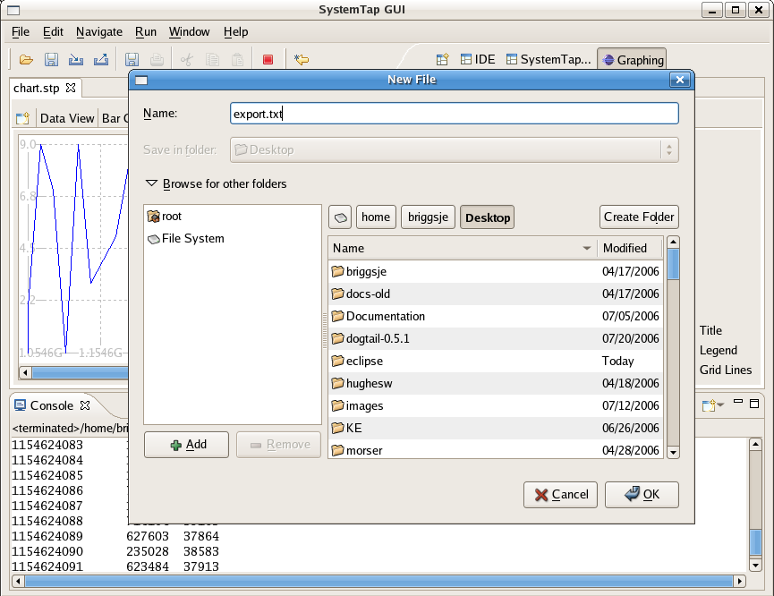
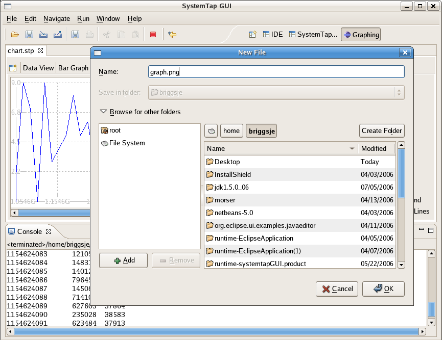

| SystemTap Graphing | ||
|---|---|---|
|
|
|
|
| SystemTap IDE | SystemTap Dashboard | |
The Graphing Perspective in the SystemTap Plug-in is a perspective that is active once a user runs a script with the chart option ( Run->Run w/ Chart). From this point a DataTable is populated with live data as it is parsed from the Console. From the information in the DataTable you can generate the following graphs:
These graph types can be used instantiated by using the Graph Wizard once the DataTable is populated. The Graphing Perspective can support multiple graphs from one DataTable. Each are updated and can be viewed by navigating through the tabs shown at the top of each graph.
If you have not already, you will want to review the Graphing Tutorial
In order to graph SystemTap scripts you must have a script open in the IDE Perspective, and the Run->Run w/ Chart option must be used. If you are unfamiliar with how to load or write a SystemTap script, please review the IDE Tutorial in the SystemTap IDE User's Guide. Please use the following script for this example by copying and pasting it into a new file (any name is fine that ends in a .stp extension):
global read, write, start
probe begin {
start = gettimeofday_s()
}
probe syscall.write {
write += count
}
probe syscall.read {
read += count
}
probe timer.ms(1000) {
printf("%d\t%d\t%d\n", (gettimeofday_s()-start), read, write)
read=0
write=0
}
Now select Run->Run w/ Chart. This feature will prompt the user for the number of columns for the chart, in addition to their titles and regular expressions. The regular expressions are used to parse the console output for the script and determine the values of each column at a certain sample point. The combined regular expression is shown at the bottom of the dialogue box. You should see the following:

For this example enter the following:
Columns: 3 TITLE REGULAR EXPRESSION DELIMITER Time \d+ .* \D+ Read \d+ .* \D+ Write \d+ .* \D+
The title fields simply display the associated string in the column's header. After clicking OK the script will prompt you for details regarding the Remote Server. Provide the ip address of the remote server that is running the systemtapgui Server or the Data Management Daemon. The port is by default 22462. Enter a username and password.This will give the application permissions to run your script on the remote machine. You have the option of saving your password as well, however be warned this is currently NOT encrypted so this convenience runs at a risk. The username is also used to transfer the file to the remote system using SCP. If the same machine is used as both the server and the client enter 'localhost' for the Host field. When the script is executed the application will switch into the Graphing perspective. A Data View chart is populated with live data, in addition to the output in the console. You should see a screen similar to the following:

You will see that the data table poplulates from live data parsed from the console. Now we'll make a graph to briefly illustrate the Graphing perspective. Click the Create Graph button next to bring up the Select Chart dialogue.

Select line graph. You will be prompted to select a column of the X series and Y series; select "Time" and "Write" respectively. After you click ok you should see the line graph as follows:

Note that the multiple series graphs (Multi-Line, Multi-Bar, and Multi-Scatter) will request two Y series, Y1 and Y2. In the case of our example, these would be "Read" and "Write". Each series will be assigned a different color value for the purposes of differentiation and will be plotted both in respect to the specified X series.
The DataTable is the default view the user sees when running a script with the chart option. It intitially starts empty and populates as it recieves information parsed from the console originally from the script. The DataTable is a visualization of the data structure that every other graph type spawns from. 
The columns of the DataTable can be resized at will by dragging the seperation lines between column headers. In addition, the information in the data table can be saved and loaded without having to re-run the script. Furthermore, the user can populate the DataTable without having to run a script if a script's output has been saved into a file, see Opening Script Output .Right clicking the DataTable provides a menu with the following options:
Currently there are five graph types built into SystemTap Plug-in.
These graph types can be used instantiated by using the Graph Wizard once the DataTable is populated. The Graphing Perspective can support multiple graphs from one DataTable. Each are updated and can be viewed by navigating through the tabs shown at the top of each graph.
A Scatter Graph uses Cartesian coordinates to show the relation of two or more quantitative variables.
Creating a Scatter Graph will prompt the user for three values. The first is the title and is fully cosmetic. The option to turn on and off the title is given to the user, and its off by default. The second option is X Series; here you select which series of data you want to plot along the X Axis. The third option is the Y Series; here you select which series of data you want to plot along the Y Axis. Optionally you can add extra Y Series; here you select another series of data you want to plot along the Y Axis.

The Line Graph is traditionally ideal for horozontally depicting non-cumulative data over, say, time.
Creating a Line Graph will prompt the user for three values. The first is the title and is fully cosmetic. The option to turn on and off the title is given to the user, and its off by default. The second option is X Series; here you select which series of data you want to plot along the X Axis. The third option is the Y Series; here you select which series of data you want to plot along the Y Axis. Optionally you can add extra Y Series; here you select another series of data you want to plot along the Y Axis.

The Area Graph is traditionally ideal for horozontally depicting non-cumulative data over, say, time.
Creating an Area Graph will prompt the user for three values. The first is the title and is fully cosmetic. The option to turn on and off the title is given to the user, and its off by default. The second option is X Series; here you select which series of data you want to plot along the X Axis. The third option is the Y Series; here you select which series of data you want to plot along the Y Axis. Optionally you can add extra Y Series; here you select another series of data you want to plot along the Y Axis.

The Bar Graph typically uses bars to show frequencies or values.
Creating a Bar Graph will prompt the user for three values. The first is the title and is fully cosmetic. The option to turn on and off the title is given to the user, and its off by default. The second option is X Series; here you select which series of data you want to plot along the X Axis. The third option is the Y Series; here you select which series of data you want to plot along the Y Axis. Optionally you can add extra Y Series; here you select another series of data you want to plot along the Y Axis.

The Pie Graph uses a pie to show percentages.
Creating a Pie Graph will prompt the user for three values. The first is the title and is fully cosmetic. The option to turn on and off the title is given to the user, and its off by default. The second option is X Series; here you select the series to be used as labels of each area of the pie chart. The third option is the Y Series; here you select which series of data will be used to calculate the percentages of each area of the pie chart. Optionally you can add extra Y Series; here you select another series of data you want to plot along the Y Axis.

Filters are screens that you can set on your DataTable to limit the quantity of samples you wish to work with. Filters are very often used in restricting the sheer amount of information available to make data tables and graphs more substantial to people.
The following options exist to work with Filters in the DataTable:
When you select Add Filter you see the following dialogue box:

What follows is a breakdown of each Filter type:
value does not match the chosen value.
 Result:
Result:

selected range of values.

Result:

removed.
 Result:
Result:

value in the selected column. Data for the removed rows will be aggregated together based on the chosen
aggregation method.

Each of the Graph Types have similar options that can be used in the Graphical Perspective:


This section of the Graphing User Guild is intended to provide help pages for common tasks that the user may wish to perform in the Graphics Perspective.
From time to time the user may want to preserve the script results for continued work at a later date/time or to share findings with others. The Importing and Exporting options provide an easy way to do this.
In order to import a Data Set the user must first have one either from running a script or from another user. To import the Data Set select File->Import Data Set. The user will be prompted with an Open File dialogue box. Navigate to the Data Set file you wish to open and select it. Keep in mind Data Set files can have any extension type, though the user may want to use .set for consistency. 
In order to export a Data Set the user must first have a populated DataTable from a previously running script. To export the Data Set select File->Export Data Set. The user will be prompted with an New File dialogue box. Navigate to the location you wish to export the Data Set to and save it. Keep in mind Data Set files can have any extension type, though the user may want to use .set for consistency. 
In order to graph SystemTap scripts you must have a script open in the IDE Perspective, and the Run->Run w/ Chart option must be used. If you are unfamiliar with how to load or write a SystemTap script, please review the IDE Tutorial in the SystemTap IDE User's Guide.
A Graphing Tutorial has been written to guide the user through the execution and charting of a provided script. Any script can be used however that provides consistent data along with a regular expression (regex). For instructions on using regex see our Guide to Regular Expressions .
This option allows the user to open a text file containing the output of a SystemTap script, and to parse it as it would real time data from a running script. Select File->Open Script Output. Navigate to the file you wish to open and select it. The DataTable will populate with the data, at which point you can graph the results.
The Graphics Perspective provides a unique feature to users that allows them to save their graphs in a standard image format. In order to do this use the menu option File->Save Graph Image. This opens a dialogue box where the user can navigate to the location they desire to save the image file.

This section of the Graphing User Guild is intended to provide the following resources should you have any very specific questions regarding the Graphing Perspective in general or one of the options associated with it. It also contains example scripts and FAQs.
This section details frequently asked questions relating to the Graphing Perspective.
Can I make more than one graph at one time? Do they update concurrently?
A: Yes and yes. Start another graph the same way you started the first one, by clicking the Graph Wizard button.
Can I increase the rate at which SystemTap GUI update the graph?
A: Yes. By default it is set to once per second, but you can increase this in the Preferences
Is there any way to save or export the graph images?
A: Yes. Use File->Save Graph Image to save the graph.
What if I want to preserve this data for manipulation later?
A: You can do this by using File->Export Data Set. This will save your data set for further work.
What follows is a comprehension list of the menu options available within the Systemtap GUI Graphing Perspective.

SystemTap GUI currently has two toolbars built in; an Action Bar for file and execution operations and a Perspective Selector to jump to different perspectives.
 Open Script Output - This option opens the specified file and reads the contents into the DataTable for use in the Graphing Perspective.
Open Script Output - This option opens the specified file and reads the contents into the DataTable for use in the Graphing Perspective.
 Save Graph Image - This option saves the graph in the specified file extension format.
Save Graph Image - This option saves the graph in the specified file extension format.
 Import Data Set - This option allows you to load a previously saved set of data obtained from running a SystemTap script. You can proceed from this point as if you had just ran a script and populated the DataTable.
Import Data Set - This option allows you to load a previously saved set of data obtained from running a SystemTap script. You can proceed from this point as if you had just ran a script and populated the DataTable.
 Export Data Set - This option allows you to save a current data set after you've ran a script in the intention of having someone else look at the user's script results through the tool or for further work done by the user.
Export Data Set - This option allows you to save a current data set after you've ran a script in the intention of having someone else look at the user's script results through the tool or for further work done by the user.
 Stop Script - This button will stop the currently active script from running.
Stop Script - This button will stop the currently active script from running.
 IDE Perspective - This button brings you into the IDE Perspective, useful for writing and executing scripts.
IDE Perspective - This button brings you into the IDE Perspective, useful for writing and executing scripts.
 Graphing Perspective - This button brings you into the Graphing Perspective, useful for graphing scripts.
Graphing Perspective - This button brings you into the Graphing Perspective, useful for graphing scripts.
|
|

|
|
| SystemTap IDE | SystemTap Dashboard |